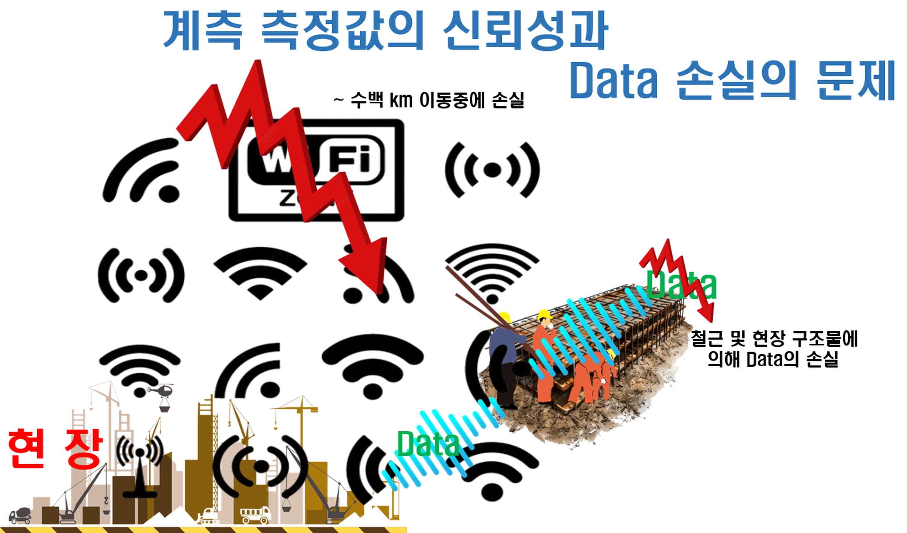

장거리 저전력 무선통신 시스템
ESP32 단독으로 하는 Wi-Fi 클라이언트 통신 시스템은 현장 환경의 모호성과 Data 손실의 문제에 직면해 있고,
ESP32 + SIM7600으로 하는 LTE, 4G/5G 이동통신망 시스템은 초기 H/W 비용, 매달 발생되는 Data 요금과 Data 손실의 문제를 야기하고 있다.
ESP32 + SIM7600으로 하는 LTE, 4G/5G 이동통신망 시스템은 초기 H/W 비용, 매달 발생되는 Data 요금과 Data 손실의 문제를 야기하고 있다.

장거리 저전력 무선 통신 시스템에서 데이터 손실과 신뢰성 문제는 중요한 고려 사항입니다.
솔루션 관점에서 다음과 같은 접근 방식을 통해 이러한 문제점을 해결할 수 있습니다.
- 오류 감지 및 정정 (Error Detection and Correction) : CRC (Cyclic Redundancy Check)
- FEC (Forward Error Correction)
- 재전송 메커니즘 (Retransmission Mechanism) : ARQ (Automatic Repeat Request)
- 다중 경로 전송 (Multi-path Transmission)
- 중계 노드 활용 (Relay Node Utilization)
- 적응형 변조 및 코딩 (Adaptive Modulation and Coding, AMC)
- 간섭 회피 및 관리 (Interference Avoidance and Management)
- 저전력 설계 (Low-Power Design)
- 네트워크 토폴로지 최적화 (Network Topology Optimization)
- 데이터 압축 (Data Compression)